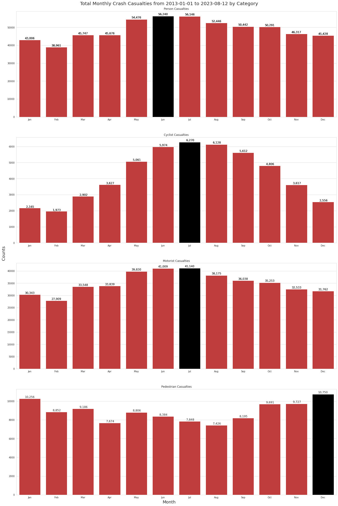
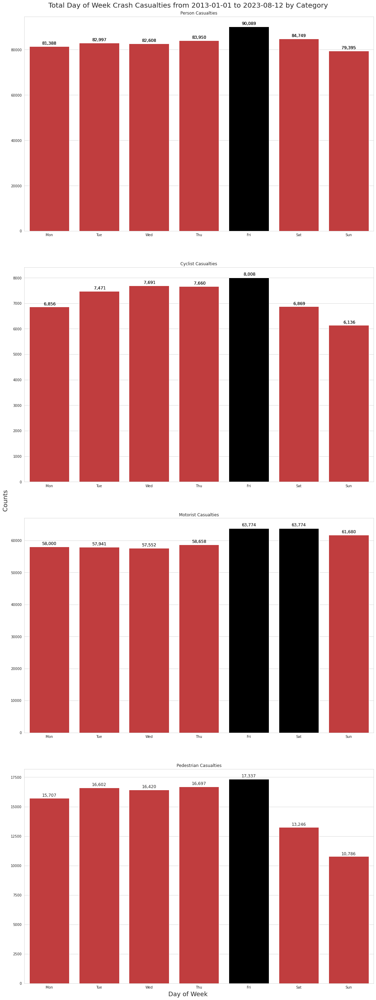

Code - Import All Required Python Modules
import datetime
from pathlib import Path
import matplotlib.pyplot as plt
# Import All Required Python Modules
import numpy as np
import pandas as pd
import seaborn as snsWhat month of the year? …what day of the week? …what time of day?
Has the most human casualties on New York’s streets?
I’ve spent considerable time walking, biking, driving and taking public transport in this busy city. Just like many New Yorkers, I’ve also had numerous close calls with vehicles while crossing wide streets, where traffic turns onto your crossing lane as you try to make it to the other side in one piece.
Using the information provided by NYC Open Data, I wanted to find out when most human casualty causing collisions occur, and how I could best present that information.
You can skip the explanations and go straight to the results.
or,
You can read on and see how I came up with these numbers.
import datetime
from pathlib import Path
import matplotlib.pyplot as plt
# Import All Required Python Modules
import numpy as np
import pandas as pd
import seaborn as sns# Data Formatting Functions
def empty_to_zero(val):
"""Converts empty values to 0"""
val = val.strip("\s+")
return val if len(val) else 0
def convert_to_numeric(df, column_list):
"""Given a list of DataFrame columns, it converts the empty values to zero"""
df[column_list] = df[column_list].apply(pd.to_numeric, errors="coerce")# Set Up Some Global Variables
# I'm omitting longitude, latitude, the vehicle types as well as crash contributing factors.
cols_requested = [
"COLLISION_ID",
"CRASH DATE",
"CRASH TIME",
"BOROUGH",
"ZIP CODE",
"LOCATION",
"ON STREET NAME",
"CROSS STREET NAME",
"OFF STREET NAME",
"NUMBER OF PERSONS INJURED",
"NUMBER OF PERSONS KILLED",
"NUMBER OF PEDESTRIANS INJURED",
"NUMBER OF PEDESTRIANS KILLED",
"NUMBER OF CYCLIST INJURED",
"NUMBER OF CYCLIST KILLED",
"NUMBER OF MOTORIST INJURED",
"NUMBER OF MOTORIST KILLED",
]
# To ensure that the colums are of the expected data type
crash_dtypes = {
"CRASH DATE": str,
"CRASH TIME": str,
"BOROUGH": str,
"ZIP CODE": str,
"LOCATION": str,
"ON STREET NAME": str,
"CROSS STREET NAME": str,
"OFF STREET NAME": str,
}
# Rename some colums to ones that I believe are shorter and/or more meaningful
cols_rename = {
"CRASH DATE": "DATE",
"CRASH TIME": "TIME",
"ZIP CODE": "ZIP_CODE",
"ON STREET NAME": "ON_STREET_NAME",
"CROSS STREET NAME": "CROSS_STREET_NAME",
"OFF STREET NAME": "OFF_STREET_NAME",
"NUMBER OF PERSONS INJURED": "NUM_PERSONS_INJURED",
"NUMBER OF PERSONS KILLED": "NUM_PERSONS_KILLED",
"NUMBER OF PEDESTRIANS INJURED": "NUM_PEDESTRIANS_INJURED",
"NUMBER OF PEDESTRIANS KILLED": "NUM_PEDESTRIANS_KILLED",
"NUMBER OF CYCLIST INJURED": "NUM_CYCLISTS_INJURED",
"NUMBER OF CYCLIST KILLED": "NUM_CYCLISTS_KILLED",
"NUMBER OF MOTORIST INJURED": "NUM_MOTORISTS_INJURED",
"NUMBER OF MOTORIST KILLED": "NUM_MOTORISTS_KILLED",
}
# Columns that contain numeric values
numeric_cols = [
"NUM_PERSONS_INJURED",
"NUM_PERSONS_KILLED",
"NUM_PEDESTRIANS_INJURED",
"NUM_PEDESTRIANS_KILLED",
"NUM_CYCLISTS_INJURED",
"NUM_CYCLISTS_KILLED",
"NUM_MOTORISTS_INJURED",
"NUM_MOTORISTS_KILLED",
]
# These ordered lists are useful for plotting charts
day_names_order = [
"Monday",
"Tuesday",
"Wednesday",
"Thursday",
"Friday",
"Saturday",
"Sunday",
]
day_abbr_order = [d[0:3] for d in day_names_order]
month_names_order = [
"January",
"February",
"March",
"April",
"May",
"June",
"July",
"August",
"September",
"October",
"November",
"December",
]
month_abbr_order = [m[0:3] for m in month_names_order]
# The following DataFrame columns that will have their empty values converted to zero using the
# 'empty_to_zero' function
convert_cols = {
"NUMBER OF PERSONS INJURED": empty_to_zero,
"NUMBER OF PERSONS KILLED": empty_to_zero,
"NUMBER OF PEDESTRIANS INJURED": empty_to_zero,
"NUMBER OF PEDESTRIANS KILLED": empty_to_zero,
"NUMBER OF CYCLIST INJURED": empty_to_zero,
"NUMBER OF CYCLIST KILLED": empty_to_zero,
"NUMBER OF MOTORIST INJURED": empty_to_zero,
"NUMBER OF MOTORIST KILLED": empty_to_zero,
}
# These are the 4 categories supplied by the NYPD
victim_categories = ["person", "cyclist", "motorist", "pedestrian"]
# 'person' status should be a combination of the other three categories
# TODO I need to verify the relationship between 'person' and the other three categories
# These are the Matplotlib Tableau colors
bar_colors = [
"tab:blue",
"tab:orange",
"tab:green",
"tab:red",
"tab:purple",
"tab:brown",
"tab:pink",
"tab:gray",
"tab:olive",
"tab:cyan",
]
base_colors = ["b", "g", "r", "c", "m", "y", "k", "w"]
# Chart Colors
color = "k"
plt.rcParams["text.color"] = color
plt.rcParams["axes.labelcolor"] = color
plt.rcParams["xtick.color"] = "b"
plt.rcParams["ytick.color"] = "b"collision_filename = "Motor_Vehicle_Collisions_Aug15_2023.csv"
# Using the Pandas 'read_csv' function
crash = pd.read_csv(
Path.cwd().joinpath("..").joinpath(collision_filename),
index_col="COLLISION_ID",
usecols=cols_requested,
dtype=crash_dtypes,
converters=convert_cols,
)original_col_names = crash.columns.to_list()
# Rename the columns using the list of new names, 'cols_rename'
crash.rename(columns=cols_rename, inplace=True)
print("Original Crash Column Names\n{}".format(original_col_names))
print("\nRenamed Crash Columns Names\n{}".format(crash.columns.to_list()))Original Crash Column Names
['CRASH DATE', 'CRASH TIME', 'BOROUGH', 'ZIP CODE', 'LOCATION', 'ON STREET NAME', 'CROSS STREET NAME', 'OFF STREET NAME', 'NUMBER OF PERSONS INJURED', 'NUMBER OF PERSONS KILLED', 'NUMBER OF PEDESTRIANS INJURED', 'NUMBER OF PEDESTRIANS KILLED', 'NUMBER OF CYCLIST INJURED', 'NUMBER OF CYCLIST KILLED', 'NUMBER OF MOTORIST INJURED', 'NUMBER OF MOTORIST KILLED']
Renamed Crash Columns Names
['DATE', 'TIME', 'BOROUGH', 'ZIP_CODE', 'LOCATION', 'ON_STREET_NAME', 'CROSS_STREET_NAME', 'OFF_STREET_NAME', 'NUM_PERSONS_INJURED', 'NUM_PERSONS_KILLED', 'NUM_PEDESTRIANS_INJURED', 'NUM_PEDESTRIANS_KILLED', 'NUM_CYCLISTS_INJURED', 'NUM_CYCLISTS_KILLED', 'NUM_MOTORISTS_INJURED', 'NUM_MOTORISTS_KILLED']# Ensure that the 'numeric_cols' column values are numeric and not string values
convert_to_numeric(crash, numeric_cols)# General Description of the dataset.
# The 'set_option' is used here to display numeric values as a 'float' rather
# than the default scientific notation
pd.set_option("display.float_format", lambda x: "%8.2f" % x)
crash.describe()| NUM_PERSONS_INJURED | NUM_PERSONS_KILLED | NUM_PEDESTRIANS_INJURED | NUM_PEDESTRIANS_KILLED | NUM_CYCLISTS_INJURED | NUM_CYCLISTS_KILLED | NUM_MOTORISTS_INJURED | NUM_MOTORISTS_KILLED | |
|---|---|---|---|---|---|---|---|---|
| count | 2017370.00 | 2017370.00 | 2017370.00 | 2017370.00 | 2017370.00 | 2017370.00 | 2017370.00 | 2017370.00 |
| mean | 0.30 | 0.00 | 0.06 | 0.00 | 0.03 | 0.00 | 0.22 | 0.00 |
| std | 0.69 | 0.04 | 0.24 | 0.03 | 0.16 | 0.01 | 0.65 | 0.03 |
| min | 0.00 | 0.00 | 0.00 | 0.00 | 0.00 | 0.00 | 0.00 | 0.00 |
| 25% | 0.00 | 0.00 | 0.00 | 0.00 | 0.00 | 0.00 | 0.00 | 0.00 |
| 50% | 0.00 | 0.00 | 0.00 | 0.00 | 0.00 | 0.00 | 0.00 | 0.00 |
| 75% | 0.00 | 0.00 | 0.00 | 0.00 | 0.00 | 0.00 | 0.00 | 0.00 |
| max | 43.00 | 8.00 | 27.00 | 6.00 | 4.00 | 2.00 | 43.00 | 5.00 |
crash.describe()The count tells us that there are over 2M rows of data. The maximum(max) NUM_PERSONS_INJURED in one collision is 43.
The average(mean) NUM_PERSONS_INJURED per collision is 0.3, or almost 1 for every three collisions. You can find more details on the pandas.DataFrame.describe function here.
The original ‘DATE’ is a “date only” field without the time. After merging the date and time columns, convert ‘DATE’ to a Python “datetime” object. Then remove the now unnecessary ‘TIME’ column.
# Merge
crash["DATE"] = pd.to_datetime(crash["DATE"] + " " + crash["TIME"])
# Remove the 'TIME' column
crash.drop(columns=["TIME"], inplace=True)
# Convert to Python 'datetime'
crash["DATE"] = pd.to_datetime(crash["DATE"])crash["DATE"].describe()count 2017370
mean 2017-05-13 17:54:54.650598912
min 2012-07-01 00:05:00
25% 2014-12-19 13:00:15
50% 2017-03-29 10:07:30
75% 2019-06-09 17:50:00
max 2023-08-12 23:56:00
Name: DATE, dtype: objectcrash['DATE'].describe()We can see that the first collision record (min) was on July 8, 2012 The last record (max), for this iteration is August 12, 2023.
# Create a 'start_date' and 'end_date' variable, which is useful for our charts
start_date = crash["DATE"].dt.date.min()
end_date = crash["DATE"].dt.date.max()
print("Start Date: {0} - End Date: {1}".format(start_date, end_date))Start Date: 2012-07-01 - End Date: 2023-08-12The BOROUGH column should contain one of the 5 boroughs of New York City, BROOKLYN, BRONX, MANHATTAN, QUEENS and STATEN ISLAND.
Unfortunately, many of the ‘BOROUGH’ fields are empty, as the NYPD don’t record it in certain situations.
For example, if the collision occurred on one of the main bridges between boroughs, or if the collision occurred on any one of NYC’s many expressways or parkways.
Further investigation would be needed to confirm this.
I previously reached out to the open data team for more information on this, but got no reply.
crash.fillna(value={"BOROUGH": "UNKNOWN"}, inplace=True)crash["BOROUGH"].describe()count 2017370
unique 6
top UNKNOWN
freq 627585
Name: BOROUGH, dtype: objectcrash['BOROUGH'].describe() provides some useful information.# Replace empty ZIP_CODE's with 'UNKNOWN'
crash.fillna(value={"ZIP_CODE": "UNKNOWN"}, inplace=True)As with the BOROUGH column, the postal ZIP_CODE is often left empty.
Empty Zips will be replaced by ‘UNKNOWN’.
crash["ZIP_CODE"].describe()count 2017370
unique 235
top UNKNOWN
freq 627823
Name: ZIP_CODE, dtype: objectcrash['ZIP_CODE'].describe()Using crash['ZIP_CODE'].describe(), we see that the ZIP_CODE with the most collisions, top, is 11207, in Brooklyn.
The freq gives a count of collisions for this zip code. 11207 has a large population, almost 80,000 people, which may account for these numbers. A future project would be to see how these zip code counts relate to their population. The unique number tells us that there are 234 NYC zip codes with recorded collisions in this dataset.
# by extracting information from the *DATE* column
# Set up some date columns: YEAR, MONTH_NAME, DAY_NAME, HOUR
# Remove all records for 2012 as it's only a partial year.
crash["YEAR"] = crash["DATE"].dt.year
# Get rid of 2012 as it only has 6 months of data
no_2012_mask = crash["YEAR"] > 2012
crash = crash[no_2012_mask]
# Reset the start_date variable to reflect the change
start_date = crash["DATE"].dt.date.min()
year_order = crash["YEAR"].sort_values().unique()
# Create a MONTH_NAME column. Actually, month abbreviated name
crash["MONTH_NAME"] = crash["DATE"].dt.month_name().str[0:3]
# Create a HOUR column, which reflects the hour of day that the collision occurred
crash["HOUR"] = crash["DATE"].dt.strftime("%H")
# Need to convert hour_order to a Python list instead of Numpy array
hour_order = crash["HOUR"].sort_values().unique().tolist()
crash["DAY_NAME"] = crash["DATE"].dt.strftime("%a")
print("Year, Month and Hour order lists will be used for charting.")
print("Year order: {}\n".format(year_order))
print("Month abbreviations: {}\n".format(crash.MONTH_NAME.unique()))
print("Hour order: {}\n".format(hour_order))Year, Month and Hour order lists will be used for charting.
Year order: [2013 2014 2015 2016 2017 2018 2019 2020 2021 2022 2023]
Month abbreviations: ['Sep' 'Mar' 'Jun' 'Dec' 'Apr' 'Jul' 'Feb' 'Aug' 'Nov' 'May' 'Jan' 'Oct']
Hour order: ['00', '01', '02', '03', '04', '05', '06', '07', '08', '09', '10', '11', '12', '13', '14', '15', '16', '17', '18', '19', '20', '21', '22', '23']
This chart will give an overview of the total deaths and injuries on NYC roads.
crash_by_year_killed = (
crash.groupby("YEAR")["NUM_PERSONS_KILLED"].sum().sort_values(ascending=False)
)
crash_by_year_injured = (
crash.groupby("YEAR")["NUM_PERSONS_INJURED"].sum().sort_values(ascending=False)
)killed_injured = {
"Killed": crash_by_year_killed.loc[year_order],
"Injured": crash_by_year_injured.loc[year_order],
}
x_loc = np.arange(len(year_order)) # the label locations
width = 0.45 # the width of the bars
multiplier = 0
fig, ax = plt.subplots(figsize=(10, 15), layout="constrained")
# Create the Injured/Killed bars for each year
for killed_or_injured, count in killed_injured.items():
offset = width * multiplier
rects = ax.bar(x_loc + offset, count, width, label=killed_or_injured)
ax.bar_label(rects, padding=3)
multiplier += 1
# Add some text for labels, title and custom x-axis tick labels, etc.
ax.set_xlabel("Year", fontsize=14)
ax.set_ylabel("Killed/Injured Count", fontsize=14)
ax.set_title(
"Persons Killed and Injured From {0} to {1}".format(start_date, end_date),
fontsize=20,
)
ax.set_xticks(x_loc + (width / 2), year_order)
ax.legend(loc="upper left")
ax.set_yscale("log")
plt.show()The chart shows that traffic fatalities had a general downward trend from the high of 297 in 2013 to a low of 231 in 2018. The trend is upwards from 2019 to 2021, which was just 1 off the worst year, 2013. For injuries, 2016 to 2019 were the worst. The following years are a slight improvement, but no visible downward trend yet.
For each category, Person, Pedestrian, Cyclist and Motorist there will be a new ‘CASUALTY’ column with the combined Injured/Killed values
The new columns are, PERSON_CASUALTY_COUNT, PEDESTRIAN_CASUALTY_COUNT, CYCLIST_CASUALTY_COUNT and MOTORIST_CASUALTY_COUNT
crash["PERSON_CASUALTY_COUNT"] = crash.NUM_PERSONS_INJURED + crash.NUM_PERSONS_KILLED
crash["PEDESTRIAN_CASUALTY_COUNT"] = (
crash.NUM_PEDESTRIANS_INJURED + crash.NUM_PEDESTRIANS_KILLED
)
crash["CYCLIST_CASUALTY_COUNT"] = crash.NUM_CYCLISTS_INJURED + crash.NUM_CYCLISTS_KILLED
crash["MOTORIST_CASUALTY_COUNT"] = (
crash.NUM_MOTORISTS_INJURED + crash.NUM_MOTORISTS_KILLED
)
killed_injured_mask = (crash.NUM_PERSONS_KILLED > 0) & (crash.NUM_PERSONS_INJURED > 0)show_valuesA function to print value counts above or to the side of Barchart bars.
I got the original function from this very useful site, statology.org.
def show_values(axs, orient="v", space=0.01):
def _single(ax):
if orient == "v":
for p in ax.patches:
_x = p.get_x() + p.get_width() / 2
_y = p.get_y() + p.get_height() + (p.get_height() * 0.01)
value = "{:6,.0f}".format(p.get_height())
ax.text(_x, _y, value, ha="center", fontsize=12)
elif orient == "h":
for p in ax.patches:
_x = p.get_x() + p.get_width() + float(space)
_y = p.get_y() + p.get_height() - (p.get_height() * 0.5)
value = "{:6,.0f}".format(p.get_width())
ax.text(_x, _y, value, ha="left", fontsize=12)
if isinstance(axs, np.ndarray):
for idx, ax in np.ndenumerate(axs):
_single(ax)
else:
_single(axs)# Statistics will be created for the below columns.
# PERSON_CASUALTY_COUNT
# PEDESTRIAN_CASUALTY_COUNT
# CYCLIST_CASUALTY_COUNT
# MOTORIST_CASUALTY_COUNT
def create_grouped_casualty_data_by_category(
victim_categories, time_group="YEAR", order_list=None
):
"""
Create multiple Seaborn SubPlot charts based on:
PERSON_CASUALTY_COUNT, PEDESTRIAN_CASUALTY_COUNT, CYCLIST_CASUALTY_COUNT and MOTORIST_CASUALTY_COUNT
time_group can be 'HOUR', 'DAY_OF_WEEK', 'MONTH_NAME', 'YEAR'
"""
time_group = time_group.upper()
all_casualty_data = []
for category in victim_categories:
cat_upper = category.upper()
casualty_label = cat_upper + "_CASUALTY_COUNT"
casualty_data = crash.groupby(by=[time_group], as_index=True).agg(
{casualty_label: "sum"}
)
if order_list and len(order_list):
casualty_data = casualty_data.loc[order_list]
category_data = {
"category": category,
"casualty_label": casualty_label,
"casualty_data": casualty_data,
}
all_casualty_data.append(category_data)
return all_casualty_data
def create_bar_plots_for_casualty_data(sns, axes, order_list, crash_victims_data):
for idx, category_data in enumerate(crash_victims_data):
xlabel = None
ylabel = None
# Casualty Chart
category_title = category_data["category"].title()
chart_title = "{0} Casualties".format(category_title)
casualty_max = category_data["casualty_data"][
category_data["casualty_label"]
].max()
casualty_values = category_data["casualty_data"][
category_data["casualty_label"]
].to_list()
casualty_colors = [
"k" if (x >= casualty_max) else "tab:red" for x in casualty_values
]
ax = axes[idx]
sns.barplot(
data=category_data["casualty_data"],
x=order_list,
order=order_list,
y=category_data["casualty_label"],
palette=casualty_colors,
ax=ax,
).set(title=chart_title, xlabel=xlabel, ylabel=ylabel)
show_values(axes)title_fontsize = 20
label_fontsize = 18
# For spacing between charts on the same grid
gridspec_kw = {"wspace": 0.1, "hspace": 0.1}
sns.set_style("whitegrid")2018 was the worst for human casualties, with 62,172 injuries and deaths. 2019 was a close second, followed by 2017 and 2016.
col_ct = 1
# Create the outer figure box
fig, axes = plt.subplots(
4, col_ct, figsize=(15, 40), layout="constrained", gridspec_kw=gridspec_kw
)
fig.suptitle(
"Total Yearly Crash Casualties from {0} to {1} by Category".format(
start_date, end_date
),
fontsize=title_fontsize,
)
fig.supxlabel("Year", fontsize=label_fontsize)
fig.supylabel("Counts", fontsize=label_fontsize)
crash_casualty_data = create_grouped_casualty_data_by_category(
victim_categories, "year"
)
create_bar_plots_for_casualty_data(sns, axes, year_order, crash_casualty_data)June has been the worst month for human casualties, with 56,240 injuries and deaths.
The Summer months in general seem to be bad for motorists and cyclists, while winter is bad for pedestrians.
# Create the outer figure box
col_ct = 1
fig, axes = plt.subplots(
4, col_ct, figsize=(20, 30), layout="constrained", gridspec_kw=gridspec_kw
)
fig.suptitle(
"Total Monthly Crash Casualties from {0} to {1} by Category".format(
start_date, end_date
),
fontsize=title_fontsize,
)
fig.supxlabel("Month", fontsize=label_fontsize)
fig.supylabel("Counts", fontsize=label_fontsize)
crash_casualty_data = create_grouped_casualty_data_by_category(
victim_categories, "month_name", month_abbr_order
)
create_bar_plots_for_casualty_data(sns, axes, month_abbr_order, crash_casualty_data)
Friday tends to be the worst day for human casualties, with 90,089 injuries and deaths. Sunday seems to be the safest.
col_ct = 1
fig, axes = plt.subplots(
4, col_ct, figsize=(15, 40), layout="constrained", gridspec_kw=gridspec_kw
)
fig.suptitle(
"Total Day of Week Crash Casualties from {0} to {1} by Category".format(
start_date, end_date
),
fontsize=title_fontsize,
)
fig.supxlabel("Day of Week", fontsize=label_fontsize)
fig.supylabel("Counts", fontsize=label_fontsize)
# crash.set_index('MONTH_NAME').loc[month_abbr_order].groupby(by=['MONTH_NAME']).agg({'PEDESTRIAN_CASUALTY_COUNT': 'sum'}).plot(kind='bar')
crash_casualty_data = create_grouped_casualty_data_by_category(
victim_categories, "day_name", day_abbr_order
)
crash_casualty_data
create_bar_plots_for_casualty_data(sns, axes, day_abbr_order, crash_casualty_data)
The hour between 5 and 6 pm is the worst time for human casualties, with 40,777 injuries and deaths. The rush-hour times around 5 pm have a high casualty count. The morning rush hour also trends higher, but much lower than the evening rush-hour.
The early hours of the morning between 12 and 1 am also having a high body count. This is at a time when you would expect the traffic volume to be low.
# Create the outer figure box
col_ct = 1
fig, axes = plt.subplots(
4, col_ct, figsize=(15, 40), layout="constrained", gridspec_kw=gridspec_kw
)
fig.suptitle(
"Total Hour of Day Crash Casualties from {0} to {1} by Category".format(
start_date, end_date
),
fontsize=title_fontsize,
)
fig.supxlabel("Hour of Day", fontsize=label_fontsize)
fig.supylabel("Counts", fontsize=label_fontsize)
crash_casualty_data = create_grouped_casualty_data_by_category(
victim_categories, "hour", hour_order
)
# Create the inner charts
create_bar_plots_for_casualty_data(sns, axes, hour_order, crash_casualty_data)
No major surprises with most of the data. Most injuries and deaths occur during the evening rush hour, when traffic volume is at its highest and people are in a rush to get home. This is particularly evident on Fridays, when the urge to get home seems to be the greatest.
I’m still curious as to why more motorist casualties on Saturday are equal to the Friday’s total. It could be because of Friday night “madness” or some other reason. I’d like to spend more time digging into that.
It’s also not too surprising that the cyclists are getting mowed down more often in the Summer months, as there are probably a lot more bikes on the road during those times.
For pedestrians, the upward trend in casualties from October to January is a little surprising. The December peak may be because of holiday shopping and holiday parties? That’s something I’ll spend more time analyzing in the future.
This Project on GitHub
Me on Linkedin
NYC Streetsblog
HellgateNYC
NYC Open Data
nbdev really helped setup this blog post